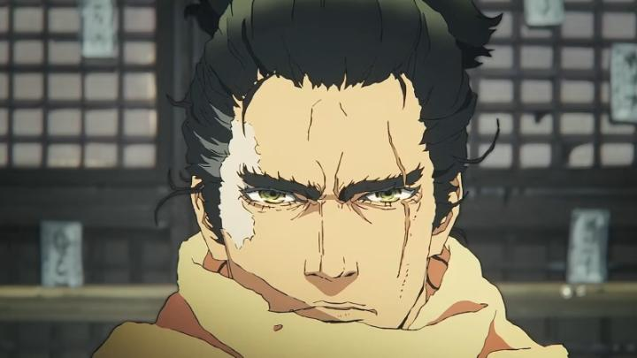
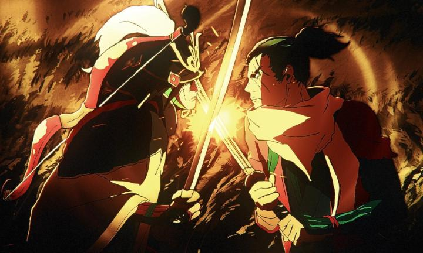

Disclaimer: This is a review for the 2026 anime film "Sekiro - No Defeat," based on the video game "Sekiro - Shadows Die Twice." Curiously, this anime was also announced to be a TV series, where the film (predating the series release) is a condensed version of the series' content. This review covers the film version, as screened at Fantasia Film Festival 2026."Sekiro - No Defeat" is based on a video game I've not played. Even so, I was optimistic; it feels like we don't get a lot of pure samurai films in the vein of "Sword of the Stranger." This is a fairly sparse, but rich, world, and we follow Wolf, a silient shinobi, and loyal bodyguard to his young lord, Kuro. Kuro has "dragon's blood" that can grant immortality - giving that gift to Wolf, he dies a few times in the movie, but heals right back (cleverly, not unlike a "game over - restart" video game screen). But this causes a blight to sweep the land. Meanwhile, the kingdom of Ashina is under threat from neighbouring nations - Kuro's other guards and samurai want the gift of immortality themselves to better fight, but Kuro refuses. Thus, a complex web of ambitions and motivations take place, with most of the film being of Wolf and Kuro on the run, Wolf taking down anyone that dares to mean Kuro harm. The most curious thing about "No Defeat" is the amount of restraint it has in all aspects, including visuals, writing, and audio. There isn't much music at all, in fact; most of the audio is silent, except the occasional sound effects of footsteps or sword swooshes. The writing gives just enough to hint at the backstories and character histories and other aspects of this world, without spelling out that detail. The original game was by FromSoftworks, the creators behind "Dark Souls" and "Elden Ring," and I've always heard good things about their world-building, despite the lack of a story (the story really isn't the point of the games). Without experiencing the original, I think I can appreciate that same level of world-building here. That writing helps make the film feel oddly mature, like a live-action film by an assured director, despite the occasional breaks of humour or action so distinctly anime. Action too is restrained, in a good way. Wolf doesn't have any personality, and we get more of him doing rather than emoting. Like the game, he silently whips around like Spider-man (or like Rocksteady's Batman) thanks to a robotic false arm. He'll sometimes just appear, standing quietly in the distance. When he fights, just a single timed swing is enough to strike down a foe, a more realistic depiction of Japanese sword fighting. He'll take down entire camps this way, assassinating guards one at a time. When the battles are longer against key enemies, every extra minute the fight lasts feels more meaningful. It's like watching a pair of pro ping pong athletes, and the excitement of a play that goes back and forth for more than a few hits, waiting for an opponent to make a single false move.

Visually, that restraint is also present, for better or for worse. I mostly like the visual style, with ragged outlines for the characters. It feels gritty, reminding me of "Afro Samurai," but with a different choice of persistent style. Animation, however, is often outright missing. The majority of scenes hang on a single still frame of a character, with no dialogue or movement, for several seconds. Not just a few seconds... several! Again, this ties back to the exposition not being too frequent, so I suppose this is a valid creative choice? It does make me wonder however whether there were significant issues with timelines or budgets in this production... and whether the extra time to produce the TV version will allow them to update this. Things certainly look better during the fight scenes with boss-like characters, but I can't give this a free pass. That does bring the studio into question. Qzil.la is a relatively new studio, with a terrible company name (why is there a period in it?). Early in "No Defeat's" production, alert fans found the studio's stance was to embrace new technology, including things like generative-A.I. and blockchain. PR had to do a lot of damage control to insist that this movie was entirely done by human artists. Could I tell? That ragged outline style, and the general softness of the entire film (making it look as if it was produced in the mid-2000's), and especially movement of characters from a far distance, is a little suspect. It's more likely however that the significant lack of movement and animation is evidence - did they perhaps plan to use A.I. for those scenes, and decide not to add it late in production, at the cost of so many static still frames? And do such methods have anything to do with the stoic emptyness of the audio or writing? Perhaps it's fun to speculate, but as automated methods get better, or as they become intertwined with human-led actions, it'll become impossible to know for sure - I'll take it at face value as it is, and assume no A.I. was used, and say that my score regarding the final quality wouldn't change even if A.I. was involved. And that quality is ultimately a mixed one. "Sekiro - No Defeat" feels like an original take on the samurai anime genre, thanks to how it handles writing and world-building. It's a fascinating world, and coming from someone who hasn't played any of FromSoftware's games... this film makes me want to try playing "Sekiro" as my first of their collection. But some of those choices feel both assured and alien at once, regarding how much is left out, especially the animation itself. I'd have loved to be a fly on the wall, sneaking aroundthe offices of the studio during the movie's production. - "Ani" More reviews can be found at : https://2danicritic.github.io/ Previous review: review_Seitokai_Yakuindomo_(Season_1,_Season_2,_Movie_1) Next review: review_Sengoku_Basara_-_Samurai_Kings